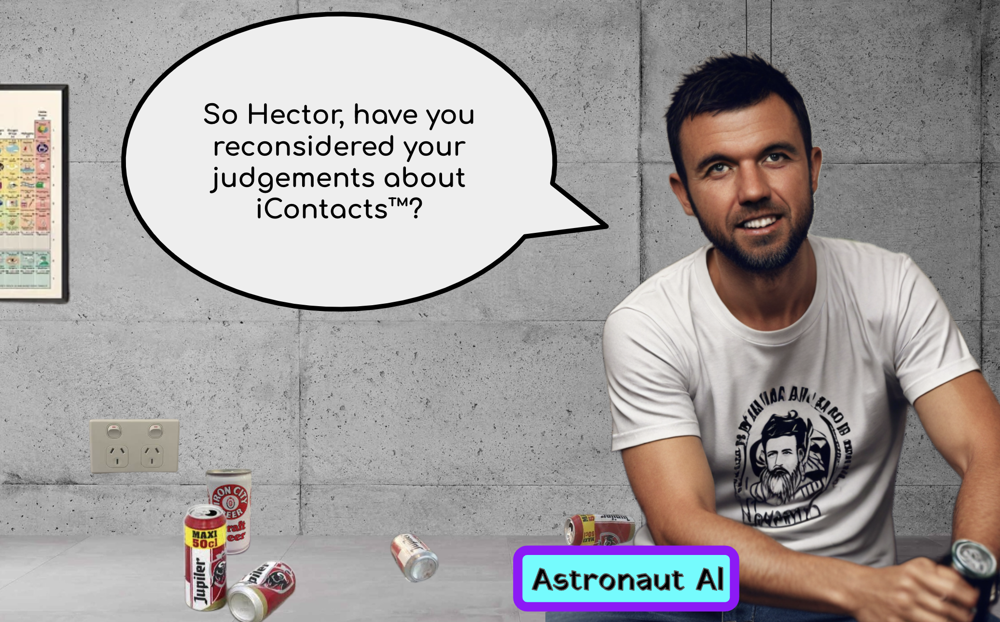

At that moment, there was only one other student enrolled at TravelingMouthBand University in the MiamiValleyArea. His name was .Xiander Xu_ and he lived in Xenia, one town over from Hector.
At Astronaut Al's behest, Hector bicycled eastward on the rails-to-trails bike path, traveling twenty klicks until he arrived at Xiander's parents' rural property. They lived effectively in a shack that had been built atop a mobile home.
Xiander's house smelled like endless cigarillos, as his father worked from home, staring at a trio of computer monitors. Quickly, Xiander took Hector back to his bedroom.

"Maybe tertiary," Hector said, wandering around the edges of Xiander's small room, examining posters and objects on shelves. He picked up a glass trianglular prism and held it toward Xiander.
"My mom's a Maniite," Xiander explained. "She converted once she moved here."
"When did [y'all] move here?"
"What I was two jaars old," Xiander said. "My grandparents had to smuggle her out of Zhōngguó because her dad was an enemy of the state."
"Enemy of the state?" Hector asked.
"Well, it didn't take much back then. You just had to be mildly less than enthusiastic about gov't plans."
"Like farm collectivation?"
"Like... anything."
Hector and Xiander went out into the living room, where Xiander's father had created a colloid-filled fog of smoke for an atmosphere.
«The encapsulation of quantochemical political worldviews has yielded gains in intellectual dividends, steamrolling efforts to establish dichotomous decisions designed to trap choosers in fradulent framings.» -- CUP NEWS
"Dad, what are you listening to?"
"Oh that? Just trash. Something to fill the silence while I solve all the problems these morons keep creatin'."
"While you smoke your fiftieth cigarillo of the day? Yeshi, this place smells like [faeces].
In response, Mr. Xu inhaled a deep pull, and exhaled a cloud of smoke at the computer monitor toward which he stared. "If you don't like it, son, there's a perfectly inhabitable shed in the backyard.
The shed was perfectly inhabitable. Xiander knew this because -- for half a jaar [seven moonths] -- his father had slept there at the request of Xiander's mother. The details regarding his mother's『request』were concealed from Xiander, but it didn't take much sleuthing to find an -- unskillfully -- hidden file folder on her MOB that spelled it all out.
"My dad was spending a ridiculous amoount of ¢oin on roxxxieBots™," Xiander explained to Hector, as they stood inside the air-conditioned tool shed that featured a bed. Xiander reached underneath the bed and pulled out
"What in the kur is that?" Hector asked.
"Conspiracy rag," Xiander said. "My dad loves reading this crap. S'posedly just for [faeces] and giggles."
Hector flipped through the 'zine, grinning as he read various aspects of the periodical.


"This is some wild stuff," Hector said.
"This isn't even the least of it," Xiander said. "Wait until you get to the flower people," and he threw another 'zine atop the bed.
Xiander and Hector bicycled back to BeaverCreek, toward [blank space]. It was dusk when they arrived at the strip mall parcel. When they arrived, Astronaut Al had already been drinking for quite some time.
"Hey Al," Hector said. "I brought Xiander like you asked me."
Al turned his head, slowly, deliberately toward Xiander. "Greetings, Xiander," Al said. "It's a pleasure to meet you."
Xiander looked at all the empty yeefass cans laying around. "Yeah," Xiander said. "So... you work for TMB?"
Al emphatically shook his head. And he kept shaking his head. Until he stopped. "No, no, no," Al said. "I do not work for them. We are in a business arrangement. We have a contract together.
"And what exactly is the nature of that contract?" Xiander asked.
Al smiled before slightly vomitting in his mouth. He swallowed. "I am considered an «extracurricular supplemental educational resource»."
"Can I stay at your house?" Xiander asked. "I don't feel like biking home."
When they arrived at Hector's house, it was realized that the electricity had been shut off. All the lights were off, the windless interiour was sweltering, and Hector's little brother was nowhere to be found.
"Where is your family?" Xiander asked.
"My little brother is probably staying at a friend of the neighbourhood's house," Hector said. "My older brother lives in Tejas. My dad is often away for work, and I haven't seen him in a moonth."
"A moonth?"
"Yeah. I mean, it's not the first time. And it's not the first time the bills went unpaid long enough that utilities got shut off."
"Well, you know," Xiander said. "People used to live in the woods and caves and all that."
"Oh, and my mom's dead. She's been dead for almost ten jaars."
"Oh, kur, I'm sorry."
"Ten jaars ago. No worries."
"Sure, but still."
"You still staying here?" Xiander asked.
"Yeah, I got candles and flashlights."
"Oh, okay, well, I'll stay here too."
"Are you sure?"
"Sure. It'll be an adventure."
They set up the candles and flashlights in Hector's bedroom, and then Hector told Xiander about lucid dreaming. Surprisingly, Xiander had never heard of it.
"I mean, I've heard of it," Xiander said.
"But you don't know anything about it?"
"Not really."
So Hector explained the whole deal: dreaming whilst knowing you're dreaming. The profound realization that you are the sole creator and conductor of your dreamscape. That you are not a passive victim of the machinations of your unconsciousness.
Then Hector told him the practical stuff. About flipping light switches, rubbing your hands together, and staring at numbers and letters.
"If you stare at words or numbers in a dream," Hector said, "and then you look away and then look back, the words and numbers will jump around into total nonsense. I've seen words fizzle, melt, swirl, and pulsate in colour. But mostly it just descends into gibberish. Almost every single time."
"Weird."
"Electricity does similar things. Flip a few light switches up and down, and it doesn't do what it does in real life: lights go on and off. Instead, nothing happens. Or maybe lights start flickering, dancing, intensifying, or changing colours. Maybe a radio turns on. A blender. Maybe smoke comes out of the wall. But usually, it just doesn't really work."
"Maybe we're dreaming right now," Xiander said, pointing to the flickering candle.
"That's the spirit!" Hector said, standing up off his bed to go and hit the light switch a few times. Nothing happened. He sat back down on the bed, a barely sheeted mattress on the floor. "I theorize that electricity and written symbolic language don't work because they're recent inventions by mankind. Not deep enough in the primal brain. Therefore, our dream consciousness hasn't integrated it thoroughly enough yet."
"Okay," Xiander said. "But what about that whole rubbing your hands bit? Where you rub your hands together and -- in dreams -- you don't ever feel heat? Doesn't seem to get more primal than that."
Hector shrugged.
Hector gave Xianer an empty spiral notebook for recording DreamRecall™, and then he passed out. Xiander was left looking at the flickering flame of the melting candle. As Hector snored, Xiander stood up and looked at the scraps of paper epoxied to the wall.
By the paper texture and font choices, Xiander recognized the scraps from one of the popular Divine Anthologies. Either the yeshian one or the Maniite one.
Xiander read a story about a man named Shamshoun, who possessed super-strength because he never cut his hair. He murdered and killed his tribe's enemies by the hundreds. Then he becomes enamored by a foreign woman, whom he ends up marrying and who ends up betraying him by cutting his hair. Shamshoun ends up in prison, where he is blinded and castrated, and put to work as a slave.
In the end, he is presented as a trophy to his enemy's [leaders], and chained to some pillars. But then, despite having his hair cut, Ahuramazda gives Shamshoun one last gasp of super-strength. And Shamshoun pulls down the pillars of this big building, killing all these very important elite members of the enemy's society. And, in the [suicidal] act, Shamshoun himself is also killed.
Xiander blew out the candle and laid down on the floor to sleep.
Xiander woke up in the middle of the night, with vague notions of a dream he had. But as he tried to grasp the dream memory with his hands, the dream pressurized and evaporated into a seeming nothingness.
Xiander looked over and saw Hector was awake. [It is believed by many individuals that this section received a redaction while the manuscript was in the hands of [redacted].] Xiander closed his eyes and tried to go back to sleep.